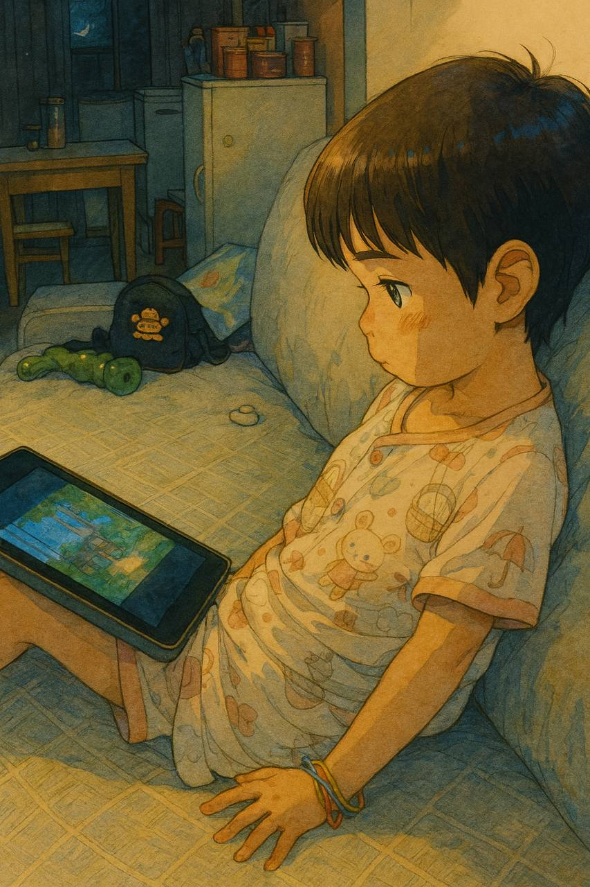
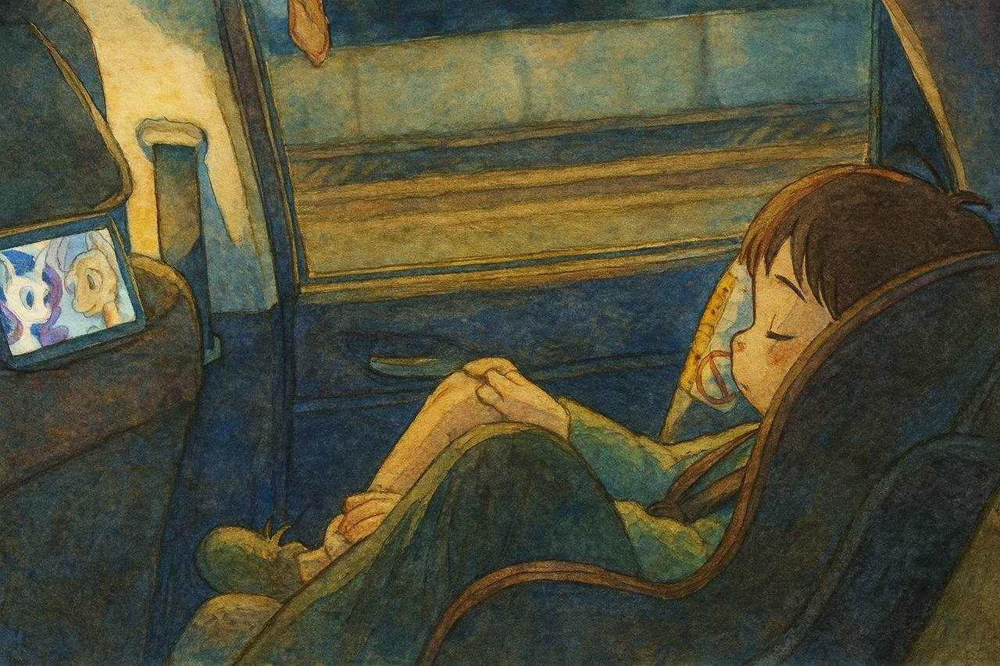

رحلة الرسوم المتحركة لابنتي | أصلي، ترجم بواسطة AI
 المصدر: chatgpt.com
عشت في غوانغجو بالصين خلال السنوات الأخيرة. عندما كنت أعمل في منطقة تيانخه للأعمال في عام 2022، ذهبت يومًا إلى مبنى المكتب وركنت سيارتي في مواقف سيارات قريبة تابعة لمجتمع سكني. رأيت أبًا يستخدم آيباد لمساعدة ابنه على دخول المصعد بينما كان يسأله أسئلة. كان ابنه يجيب بالإإنجليزية. كان ابنه صغيرًا جدًا، ربما في الرابعة أو الخامسة من عمره. انطبعت كثيرًا بهذا المشهد آنذاك.
كانت أسعار المنازل هناك تتراوح بين 6 ملايين و10 ملايين يوان صيني في ذلك الوقت. كانت غالية جدًا. لذلك كانوا من العائلات الثرية. وكانوا يهتمون جدًا بتعليم أطفالهم. كنت قد سمعت أن الناس يعملون بجد لمساعدة الجيل التالي على النجاح، لكن لم أكن قد رأيت هذا المشهد في الواقع من قبل.
شيء آخر هو أنه عندما كنت في العشرينات من عمري، لم أكن أرى كثيرًا من الأطفال في حياتي. لكن عندما أصبح لي أطفال، لاحظت أن الأطفال موجودون في كل مكان.
بسبب عملي خلال السنوات الأخيرة كمقاول لأبنك أجنبية، تحسنت لغتي الإنجليزية كثيرًا، وأستخدمها في العمل أو للدراسة الشخصية.
أجعل تعلم الإنجليزية أولوية أيضًا لابنتي. ولدت ابنتي في عام 2021. في ديسمبر 2023، نشرت فيديو لابنتي وهي تغني “بيبي شارك دو دو” و”عائلة الأصابع” أثناء عد أصابعها، بالإضافة إلى “عيد ميلاد سعيد” على فيديو وي تشات. حصل هذا الفيديو على إعجابات ومشاهدات أكثر من فيديوهاتي العادية.
كانت في الثانية من عمرها آنذاك. وأعتقد أنها ملهمة للأطفال في نفس عمرها في الصين.
الغناء بهذه الطريقة ليس سهلاً. كما أنه ليس من السهل الوصول إلى يوتيوب كيدز في الصين، فهو محجوب بواسطة الجدار الناري العظيم.
لذلك اشتريت أبل تي في وعصا فاير تي في. عدم القدرة على الوصول إلى هذه المنصات تسبب conflicts بيني وبين والدي. والداي يفضلان أن تشاهد ابنتي رسومًا متحركة صينية. لكنني أفضل أن تشاهد رسومًا متحركة إنجليزية.
وأحيانًا، إذا لم يعمل بروكسي VPN لأبل تي في أو فاير ستيك، فلا يستطيع والداي إصلاحه. وزوجتي أيضًا لا تستطيع. وفي هذه الحالة، إذا كانت ابنتي لا تزال تريد مشاهدة الرسوم المتحركة الإنجليزية وأنا غير متوفر، تبدأ في البكاء.
في البداية، لم يكن والداي يفهمان سبب إصراري على ذلك. يعتقدان أن الصينية كافية. أعرف ذلك. لكن في هذا المجتمع، المنافسة عالية جدًا. هي تنمو في الصين، لذلك بالتأكيد ستتعلم الصينية. لكن التعليم الإنجليزي هو ما ينقصها. قمت بتعلم هذه اللغة خلال سنوات عديدة في العشرينات من عمري. لذلك إذا استطاعت تحقيق هذا المستوى أو الحصول على IELTS 7 قبل سن العشرين، فستكون قادرة على الأداء الجيد في العالم المؤسسي الدولي.
وهناك الكثير من الخلافات مع زوجتي بشأن عدم السماح لابنتي باستخدام هاتفي الثاني - جوجل بيكسل - لمشاهدة الرسوم المتحركة الإنجليزية كثيرًا. لا أعتقد أن هذا مشكلة لأنني أستطيع علاج قصر النظر. يمكنك الاطلاع على ورقتي البحثية.
من الصعب جدًا تغيير آراء الآخرين، بما في ذلك الأقارب. بعد أن رأوا تقدم ابنتي في الإنجليزية، بدأوا يقبلون فكرة مشاهدتها للرسوم المتحركة الإنجليزية.
هناك من يقول إن الهواتف المحمولة تدمر نظام الدوبامين لدى الناس، ولا ينبغي السماح للأطفال باستخدام الأجهزة الرقمية في سن مبكرة.
لا أعتقد ذلك بالفعل. ما الفرق بين الرسوم المتحركة الإنجليزية والبيئة الإنجليزية؟ البيئة الإنجليزية هي مجرد رسوم متحركة إنجليزية حقيقية وملموسة. المشاهد الملونة قد تحفز الدماغ. لكن ماذا عن الملاعب الملونة؟
مثل جيفري هينتون وإيلون ماسك، اللذان يتعاملان مع التكنولوجيا الرقمية منذ أكثر من أربعة عقود، هل تغيرت أدمغتهما بسبب الأجهزة الرقمية؟ إنها أدوات لتسجيل ومشاركة المعلومات. الأمر يعتمد على كيفية استخدامها.
ونحن نعطي ابنتنا رسومًا متحركة إنجليزية لمشاهدتها أثناء رحلاتنا. أضع هاتفي الثاني على مسند الرأس في المقعد، مثبتًا في الفجوة الفارغة، حتى لا يسقط.
حتى يونيو 2025، ربما تكون ابنتي قد حصلت على 500 ساعة من مشاهدة المحتوى الإنجليزي. منذ أبريل 2023 حتى الآن، مرت سنتان. مثل ساعة واحدة في اليوم. على الرغم من أنها لا تزال غير قادرة على غناء المزيد من الأغاني الإنجليزية، إلا أننا لا نطلب منها أو نمارس ذلك عمدًا. لكن بالتأكيد قد تغير دماغها كثيرًا.
من خلال الرسوم المتحركة الإنجليزية، تعرفت على الكثير أيضًا. لا أعرف ما تشاهده. إذا سألناها، يمكنها أن تخبرنا. وعندما نتحدث عن شيء ما، ذكرته من بعض الرسوم المتحركة الإنجليزية أيضًا.
فكر في الأمر: إذا بدأ كل طفل في الصين باستخدام هذه الطريقة، ففي أقل من 20 عامًا، ستصبح الصين مثل سنغافورة. حول لي كوان يو سنغافورة إلى دولة ناطقة باللغة الإنجليزية في نصف قرن.
الخبر الجيد هو أنه على الرغم من وجود الجدار الناري العظيم الذي يفصل الصين عن العالم، يمكن العثور على معظم الفيديوهات الإنجليزية الشعبية على تيك توك على فيديوهات وي تشات الصينية أو دويين أيضًا، مع ترجمات صينية. هناك الكثير من المواد.
عندما كنت أعمل كمقاول في بنك سنغافوري، سمعت أن في فريقنا، بعض الزملاء الهنود يتحدثون الإنجليزية في المنزل مع أطفالهم. كان ذلك مدهشًا لي. فكر في الصين. خريجو جامعات تسينغهوا أو بكين قد لا يمتلكون هذه الانضباط أو الثقافة لتحدث أطفالهم باللغة الإنجليزية.
لكن أعتقد أنه في بعض أجزاء الهند وفي سنغافورة، هذا الأمر طبيعي ومعتاد.
ابنتي تعيش في المستقبل. ربما يومًا ما سيشاهد جميع الأطفال من جميع الأمم رسومًا متحركة إنجليزية منذ سن الثانية. وفي غضون بضعة أجيال، مثل عام 2050، سيستطيع 80% من السكان التحدث باللغة الإنجليزية.
 المصدر: chatgpt.com
نصائح للتربية
2025
-
الأمان هو أهم شيء. عش بطريقة متواضعة وتأكد من أن دور الحضانة أو المدارس تقوم بالأشياء الصحيحة.
-
وسع آفاقهم من خلال تعريضهم لتجارب متنوعة والسفر.
-
تجنب إجبارهم على فعل أشياء لا يحبونها وتقليل معاناتهم.
-
شجع الاستقلال والحرية في اتخاذ القرارات.
-
اسمح بجداول مرنة لأنشطة مثل النوم، خاصة إذا كان لديك نمط حياة مرن.
-
غرس حب التعلم والفضول؛ علمهم مهارات عملية.
-
علمهم كيفية التعامل مع المواقف الخطرة بشكل آمن دون مبالغة في الحماية.
-
زودهم بمهارات عملية، مثل استخدام الأدوات وفهم التكنولوجيا.
-
غرس الثقة والشجاعة في التعلم والاستكشاف.
-
علمهم احترام الآخرين واللباقة في التفاعلات.
-
اسمح لهم باتخاذ قراراتهم الخاصة منذ سن مبكرة.
-
تجنب الانتقاد؛ شجع دائمًا وفرز التعزيز الإيجابي.
-
قدم لهم رسومًا متحركة من يوتيوب كيدز لمشاهدتها وألعاب من أبل أركيد وجوجل بلاي باس للعب.
-
استخدم يوتيوب بريميوم لتنزيل بعض الرسوم المتحركة الإنجليزية للأطفال لمشاهدتها في السيارة.
-
من سن 3 سنوات: علمهم كيفية استخدام جهاز التحكم عن بعد، ولعب ألعاب الهاتف، والتفاعل مع تشات جي بي تي بالصوت، وفك شحنات التسليم.